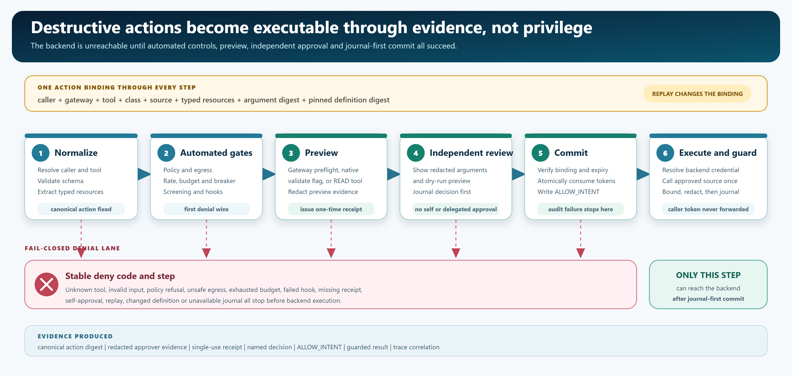

Hello World
Put Aegis into your IDE and Apache project development cycle: build, start a profile, point MCP at Aegis, send one prompt.
A configuration-driven governance layer for MCP calls. It gives agents one controlled route to real systems, with typed resources, approvals, destructive-action receipts, and locally verifiable audit evidence.
Start the Hello World Open the user handbook

Put Aegis into your IDE and Apache project development cycle: build, start a profile, point MCP at Aegis, send one prompt.
A concise route map for application teams, operators, security reviewers, and plugin authors.
Trust zones, STRIDE abuse cases TM01 to TM10, OWASP MCP Top 10 handling, S1 to S31 promises, and dated control-suite records with their attestation status.
What each core root-reactor module does, its principal configuration keys, and the security controls it enforces.
A tiny Iceberg dataset, Spark Connect, and your IDE's agent governed by Aegis, with and without Knox. All tutorials.
Connect an MCP server, declare REST tools, or choose a typed source without changing the governed project.
Connect Aegis semantic governance to an existing Knox topology for perimeter, identity, and route admission.
Full S1 to S31 table, documented limits, the threat model, and security validation.
See dated regression records, test boundaries, and real-engine evidence classifications.
Build, configure, connect an IDE, operate approvals and audit, and write sources, hooks, state and secret providers while preserving the engine’s fixed governance boundary.
Start with the system you already operate. These guides connect a practical configuration, a governed MCP surface, and the evidence that describes what was exercised.
Find reference profiles for an existing MCP server, REST API, A2A agent, JDBC source, or Apache system. Each profile states its source type and evidence boundary.
Follow guided own-host and Knox paths for Kafka, Flink, Iceberg, Spark, ZooKeeper, and other verified project integrations.
Open the repository tutorial folder for ready-made VS Code, Kiro, and Cursor MCP settings. Start the matching gateway first and supply fresh local credentials.
Review the exact configuration, topology, engine settings, audit records, and result logs from retained integration runs. Evidence status remains explicit for every profile.

| Surface | Evidence status | Where to go next |
|---|---|---|
| Core governance | Historical local release-profile regression recorded on 2026-10-03: 364 tests in a 20-project reactor, 0 failures, 0 errors, 0 skipped, and a clean Apache RAT check. This is recorded-unattested regression feedback without candidate-bound raw artifacts, not current release proof. | Validation report |
| Adapter catalog | 25 deployable adapter configurations and 116 tools are parsed and governance-tested; external compatibility remains a separate target-version claim. | Repository adopter catalog |
| Real-engine evidence | Twenty-six profiles/scenarios have retained historical own-host and Knox Keep runs, each with an IDE-ready tutorial. The mutable retained files are not candidate-bound current proof. Six additional profiles remain contract-supported only until a full product stack Keep lands (Atlas, Cassandra, Hive, Impala, Paimon, Ranger). | Adopter status |
| Security and threat model | Product threat model (STRIDE, TM01 to TM10), S1 to S31 properties, and a historical 2026-10-05 focused selection reporting 227 tests with 0 failures. This is recorded-unattested evidence without candidate-bound raw artifacts, not current-tree or release-candidate proof. Coverage is not OWASP Top 10 elimination. | Security guide |
| Added 2026-10-03 | Per-caller backend credentials by RFC 8693 token exchange (run against Keycloak 26.8.0), A2A agents as governed tools (run against an a2a-sdk 1.2.1 agent through both front doors), an OpenAPI-to-draft command, three reference hook services, and a container image and Helm chart (chart checked and its configuration started; the image is built in CI only). | Runs added on 2026-10-03 |
| Knox extension | Knox 3.0.0 API-level tests, and a 2026-10-05 run of the current bundle inside a stock Knox 3.0.0 gateway against real ZooKeeper. Knox 3.1 needs a Jakarta build. An operator must validate their Knox topology and plugin set. | Knox extension guide |